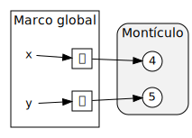

Programación imperativa (I)
Ricardo Pérez López
IES Doñana, curso 2025/2026
1 Modelo de ejecución
1.1 Máquina de estados
La programación imperativa es un paradigma de programación basado en los conceptos de «estado» y «sentencia».
Un programa imperativo está formado por una secuencia de sentencias
El programa imperativo va pasando por diferentes estados a medida que se van ejecutando las sentencias que lo forman.
Por tanto, una sentencia es una instrucción que cambia el estado del programa.
El fundamento teórico de la programación imperativa son las máquinas de Turing y la arquitectura de Von Neumann, que son modelos abstractos de cómo funciona un ordenador.
El modelo de ejecución de un programa imperativo es el de una máquina de estados, es decir, un dispositivo abstracto que va pasando por diferentes estados a medida que el programa va ejecutándose.
El concepto de «tiempo» también es muy importante en programación imperativa, ya que el estado del programa va cambiando a lo largo del tiempo conforme se van ejecutando las sentencias que lo forman.
A su vez, el comportamiento del programa depende del estado en el que se encuentre.
Eso significa que, ante los mismos datos de entrada, una función en programación imperativa puede devolver valores distintos en momentos distintos.
En programación funcional, en cambio, el comportamiento de una función no depende del momento en el que se ejecute, ya que siempre devolverá los mismos resultados ante los mismos datos de entrada (transparencia referencial).
Eso significa que, para modelar el comportamiento de un programa imperativo, ya no nos vale el modelo de sustitución que hemos estado usando hasta ahora en programación funcional.
1.2 Sentencias
Las sentencias son las instrucciones principales que componen un programa imperativo.
La ejecución de una sentencia cambia el estado interno del programa provocando uno de estos efectos:
Cambiar las coordenadas del proceso asociado al programa, normalmente mediante la llamada sentencia de asignación.
Cambiar el flujo de control del programa, haciendo que la ejecución se bifurque (salte) a otra parte del mismo.
La principal diferencia entre una sentencia y una expresión es que las sentencias no denotan ningún valor, sino que son órdenes a ejecutar por el programa para producir un efecto.
Las expresiones se evalúan y devuelven un valor.
Las sentencias se ejecutan para producir un efecto.
En un lenguaje funcional puro:
Un programa es una expresión.
Ejecutar un programa consiste en evaluar dicha expresión usando las definiciones predefinidas del lenguaje y las definidas por el programador.
Todo son expresiones, excepto las sentencias que producen el efecto de crear ligaduras (como las sentencias de definición, o de importación de módulos).
Evaluar una expresión no produce ningún otro efecto salvo el de calcular su valor.
Las expresiones devuelven siempre el mismo valor (tienen transparencia referencial).
El comportamiento de un programa se puede modelar usando el modelo de sustitución.
En cambio, en un lenguaje imperativo:
Los programas están formados por sentencias que, al ejecutarse, van cambiando el estado del programa.
El valor de una expresión depende del estado en el que se encuentre el programa en el momento de evaluar dicha expresión (no hay transparencia referencial).
Evaluar una expresión puede provocar otros efectos (los llamados efectos laterales) más allá de calcular su valor.
En muchos lenguajes imperativos es posible colocar una expresión donde debería ir una sentencia (aunque no al revés).
Esto sólo resultaría útil en caso de que la evaluación de la expresión provocara efectos laterales. De lo contrario, el valor de la evaluación se perdería sin más y no habría servido de nada calcularlo.
1.3 Secuencia de sentencias
Un programa imperativo está formado por una secuencia de sentencias.
Ejecutar un programa imperativo es provocar los cambios de estado que dictan las sentencias en el orden definido por el programa.
Las sentencias del programa van provocando transiciones entre estados, haciendo que la máquina pase de un estado al siguiente.
Para modelar el comportamiento de un programa imperativo tendremos que saber en qué estado se encuentra el programa, para lo cual tendremos que seguirle la pista desde su estado inicial al estado actual.
Eso básicamente se logra «ejecutando» mentalmente el programa sentencia por sentencia y llevando la cuenta de los cambios que van produciendo conforme se van ejecutando.
Al decir que un programa imperativo está formado por una secuencia de sentencias, estamos diciendo que importa mucho el orden en el que están colocadas las sentencias dentro del programa.
En general, un programa imperativo se comportará de forma diferente si se cambia el orden en el que se ejecutan sus sentencias.
Por eso, si se ejecuta A antes que B, el programa seguramente no producirá el mismo efecto que si se ejecuta B antes que A.
Por ejemplo, muchas veces el funcionamiento de una sentencia B depende del efecto producido por una sentencia A anterior. Por tanto, en ese caso, A debería ejecutarse antes que B.
2 Asignación destructiva
2.1 Valores y referencias
Todos los valores se almacenan en una zona de la memoria conocida como el montículo.
El valor se guardará en el montículo a partir de una determinada dirección de memoria y ocupando el espacio que se necesite en función del tamaño que tenga el valor.
Dado un determinado valor, se denomina referencia al valor a un localizador que permite identificar, localizar y acceder a ese valor dentro del montículo.
Cada vez que aparece un valor nuevo dentro del programa, el intérprete lo guarda dentro del montículo y crea una referencia al mismo.
En tal caso, se dice también que «la referencia apunta al valor».
A partir de ese momento, el valor se manipulará siempre a través de esa referencia, la cual sirve como localizador y como forma de acceder a ese valor en la memoria.
Por tanto, para poder manipular un valor, necesitamos disponer de la referencia a dicho valor.
Por ejemplo, la expresión
500representa al valor500que está almacenado en el montículo pero, en realidad, al evaluar la expresión, el intérprete no devuelve ese valor, sino una referencia al valor, a través de la cual podremos acceder al valor.
En la mayoría de los lenguajes de programación, esa referencia coincide con la dirección de comienzo de la zona que ocupa ese valor dentro del montículo, aunque ese es un detalle de funcionamiento interno del intérprete que no es necesario conocer.
Por ese misma razón, en la mayoría de los lenguajes, las referencias son únicas y constantes para cada valor:
Que sean únicas quiere decir que dos valores distintos tendrán referencias distintas.
Que sean constantes quiere decir que la referencia a un valor nunca cambia durante la vida del mismo.
No está de más recordar que los programas no pueden manipular valores directamente (ya que los valores son entidades abstractas), sino que sólo pueden manipular representaciones de ese valor.
Por ejemplo, un programa no puede manipular el número cinco, ya que los números sólo existen de forma ideal en el mundo abstracto.
Sin embargo, el programa puede manipular expresiones como
2 + 3o5, que representan (o denotan) a ese valor cinco.Por otra parte,
5es la expresión canónica del valor cinco.Esa expresión canónica representa al valor dentro del programa, ya que es, además, la forma normal de todas las expresiones que denotan el mismo valor.
Pero aunque ya sabemos que lo que se manipula y se almacena en la memoria no es el valor en sí, sino su expresión canónica, nosotros, para simplificar, siempre vamos a hablar de manipular y almacenar valores, aunque no sea del todo correcto.
A su vez, los valores (o, mejor dicho, sus expresiones canónicas) se almacenan en la memoria del ordenador usando una codificación apropiada al tipo de cada valor.
Por ejemplo, un número entero como el
5se puede almacenar usando una codificación binaria en complemento a dos, mientras que una cadena como'hola'se podría almacenar como una secuencia de caracteres Unicode.Por tanto, cuando se almacena un valor en la memoria (o, mejor dicho, cuando se almacena su expresión canónica), ocupará un espacio que dependerá del valor que sea y del tipo que tenga.
2.2 Variables
Una variable es un lugar en la memoria donde se puede almacenar la referencia a un valor.
En tal caso, se puede decir que:
- «La variable contiene (o almacena) una referencia al valor».
- «La variable hace referencia al valor».
- «La variable apunta al valor».
Otras formas menos correctas (pero que se utilizan con frecuencia por abuso del lenguaje) serían:
- «La variable contiene (o almacena) el valor».
- «La variable vale el valor».
- «La variable es una referencia al valor».
Aunque la referencia sea única para cada valor, podemos tener varias referencias apuntando a la vez al mismo valor, una por cada variable que contenga la referencia al valor. Por esto se puede hablar de «una referencia al valor» y no sólo de «la referencia al valor».
El contenido de una variable (es decir, la referencia que contiene) puede cambiar durante la ejecución del programa, haciendo que la variable pueda «apuntar» (o «hacer referencia») a distintos valores durante la ejecución del programa.
A partir de ahora, un identificador no se va a ligar directamente con un valor, sino que tendremos:
Una ligadura entre un identificador y una variable.
La variable contiene una referencia al valor.

Este comportamiento es el propio de los lenguajes de programación orientados a objetos (como Python o Java), que son los lenguajes imperativos más usados a día de hoy.
Otros lenguajes imperativos más «clásicos» (como C o Pascal) se comportan, en general, de forma diferente.
En esos lenguajes, los valores se almacenan directamente dentro de las variables, es decir, que las variables son contenedores que almacenan valores, no referencias a los valores.
Por tanto, el compilador tiene que reservar espacio suficiente en la memoria para cada variable del programa, de manera que dicha variable pueda contener un valor de un determinado tamaño y que ese valor «quepa» dentro de la variable.
De todos modos, algunos lenguajes de programación tienen un comportamiento híbrido, que combina ambas técnicas:
En Java, existen tipos primitivos (cuyos valores se almacenan directamente en las variables) y tipos referencia (cuyos valores se almacenan en el montículo y las variables contienen referencias a esos valores).
En C, los valores se almacenan dentro de las variables, pero es posible reservar memoria dinámicamente dentro del montículo y almacenar en una variable un puntero al comienzo de dicha zona de memoria, lo que permite crear y destruir datos en tiempo de ejecución.
2.3 Estado
La ligadura es la asociación que se establece entre un identificador y una variable.
El estado de una variable es el valor al que hace referencia una variable en un momento dado.
Por tanto, el estado es la asociación que se establece entre una variable y un valor (es decir, la referencia que contiene la variable y que apunta al valor).

Tanto las ligaduras como los estados pueden cambiar durante la ejecución de un programa imperativo.
El estado de un programa es el conjunto de los estados de todas sus variables (más cierta información auxiliar gestionada por el intérprete).
2.4 Marcos en programación imperativa
Hasta ahora, los marcos contenían ligaduras entre identificadores y valores.
A partir de ahora, un marco contendrá:
Las ligaduras entre identificadores y variables.
El estado de cada variable, es decir, la referencia que contiene cada variable en un momento dado.

- Para simplificar la representación gráfica, generalmente dibujaremos cada identificador al lado de su correspondiente variable (representando la ligadura), y la variable apuntando a su valor en el montículo (representando el estado).

El montículo como tal normalmente no lo dibujaremos, ya que sabemos que los valores se almacenan en él.
Igualmente, a veces tampoco dibujaremos el marco si se sobreentiende cuál es (o si no tiene importancia en ese momento).
Incluso, a veces, llegado el caso, también dibujaremos el valor directamente almacenado en la variable que le apunta, para simplificar (aunque sabemos que eso no es lo que ocurre en Python).
2.5 Sentencia de asignación
La forma más básica de cambiar el estado de una variable es usando la sentencia de asignación.
Es la misma instrucción que hemos estado usando hasta ahora para ligar valores a identificadores, pero ahora, en el paradigma imperativo, tiene otro significado:
Esa instrucción ahora se lee así:
«Asigna el valor
4a la variablex»y el efecto que produce es el de almacenar, en la variable ligada al identificador
x, la referencia del valor4almacenado en el montículo.A partir de este momento, se dice (aunque no esté muy bien dicho) que «la variable
xvale4».
Como se ve, por economía del lenguaje se dice:
«Asigna el valor
4a la variablex»o también (menos frecuente pero algo más correcto):
«Almacena el valor
4en la variable ligada al identificadorx»en lugar de la forma más correcta, pero menos frecuente:
«Almacena una referencia al valor
4en la variable ligada al identificadorx».Aunque esto simplifica las cosas a la hora de hablar, hay que tener cuidado, porque llegado el momento es posible tener:
Varios identificadores distintos ligados a la misma variable (ocurre en algunos lenguajes como PHP, aunque no en Python ni Java).
Un mismo identificador ligado a distintas variables en diferentes puntos del programa.
Varias variables apuntando al mismo valor.
Podemos ejecutar varias sentencias de asignación sobre una misma variable en diferentes puntos del programa, lo que permite que una variable pueda cambiar su valor durante la ejecución del programa.
Se dice que la asignación es destructiva porque, al cambiarle el valor a una variable, el nuevo valor sustituye a su valor anterior en esa variable.
Por ejemplo, si tras haber ejecutado la anterior asignación
x = 4, ahora hacemos:el valor de la variable
xpasa ahora a ser9, sustituyendo el valor4anterior.
Por tanto, eso significa que la variable
xpuede hacer referencia a distintos valores dependiendo del momento en el que se compruebe su valor.De hecho, la asignación anterior crea un instante que divide el flujo temporal de ejecución en dos momentos:
Antes de ejecutar la asignación,
xvale4.Después de ejecutar la asignación,
xvale9.
Cada nueva asignación provoca un cambio de estado en el programa.
En el ejemplo anterior, el programa pasa de estar en un estado en el que la variable
xvale4a otro en el que la variable vale9.Al final, un programa imperativo se puede reducir a una secuencia de asignaciones realizadas en el orden dictado por el programa.
Este modelo de funcionamiento está estrechamente ligado a la arquitectura de un ordenador: hay una memoria formada por celdas que contienen datos que pueden cambiar a lo largo del tiempo según dicten las instrucciones del programa que controla al ordenador.
2.5.0.1 Un ejemplo completo
Cuando se ejecuta la siguiente instrucción:
ocurre lo siguiente:
Se crea el valor
2500en el montículo.En determinadas situaciones, no crea un nuevo valor si ya había otro exactamente igual en el montículo, pero éste no es el caso.
El intérprete resuelve el identificador
x(que aquí consiste en determinar a qué variable está ligado el identificadorx) consultando el entorno.Si no existía dicha variable, la crea en ese momento y la liga a
xen el marco actual.Almacena en la variable una referencia al valor.
2.6 La
sentencia del
En Python existe la sentencia contraria a la asignación, es decir, una sentencia que elimina variables.
Para ello, se usa la palabra clave
delseguido de una expresión que identifique a la variable (que normalmente será un simple identificador):Al hacer
del x, se elimina la variable ligada al identificadorxen el marco donde está almacenada la variable.Tras eliminar la variable, se elimina también, en ese mismo marco, el identificador
xy la ligadura que existía entre este y la variable, puesto que ya no tiene sentido que sigan existiendo al no existir la variable.
2.7 Alias de variables y valores idénticos
Cuando una variable que tiene un valor se asigna a otra, ambas variables pasan a compartir el mismo valor, produciéndose un fenómeno conocido como alias de variables.
Esto se debe a que las variables almacenan referencias a los valores, no los valores en sí mismos (éstos se almacenan en el montículo).

Las dos variables almacenan la misma referencia (o, dicho de otra forma, son dos referencias al mismo valor).
En tal caso, decimos que
xeyson datos idénticos (no sólo iguales), ya que apuntan al mismo valor en el montículo.
2.8 Recolección de basura
Un valor se vuelve inaccesible cuando no hay ninguna referencia que apunte a él.
Eso ocurre cuando no queda ninguna variable que contenga una referencia a ese valor.
En tal caso, el intérprete lo marca como candidato para ser eliminado.
Cada cierto tiempo, el intérprete activa el recolector de basura, que es un componente que se encarga de liberar de la memoria a los valores que están marcados como candidatos para ser eliminados.
Por tanto, el programador Python no tiene que preocuparse de gestionar manualmente la memoria ocupada por los valores que componen su programa.
Por ejemplo:
tupla1 = (1, 2, 3) # crea la tupla y guarda una referencia a ella en tupla1 tupla2 = tupla1 # almacena en tupla2 la referencia que hay en tupla1A partir de ahora, ambas variables apuntan al mismo valor y, por tanto, decimos que el valor tiene dos referencias, o que hay dos referencias apuntándole.
del tupla1 # elimina una referencia pero el valor aún tiene otra del tupla2 # elimina la otra referencia y ahora el valor es inaccesibleComo ya no hay ninguna referencia apuntándole, se marca como candidato a ser eliminado y, por tanto, la próxima vez que se active el recolector de basura, se eliminará la tupla del montículo.
2.9 Evaluación de expresiones con variables
Al evaluar expresiones, las variables actúan de modo similar a las ligaduras de la programación funcional pero, ahora, los valores de las variables pueden cambiar a lo largo del tiempo, por lo que deberemos seguirle la pista a los cambios que sufran dichas variables.
Todo lo visto hasta ahora sobre marcos, ámbitos, sombreado, entornos, etc. se aplica igualmente a las variables.
Por ejemplo:
Los parámetros de las funciones (es decir, de las expresiones lambda) también son ahora variables en el paradigma imperativo.
Por tanto, si tenemos el siguiente código:
el parámetro
xes ahora un identificador que se ligará a una variable, la cual almacenará una referencia a su argumento correspondiente durante las llamadas a la función.Por tanto, en la llamada
cuadrado(4), se guardará en el marco de la expresión lambda una ligadura entre el identificadorxy una variable que se creará y se almacenará en el mismo marco, y esa variable contendrá una referencia al argumento4.
2.10 Tipado estático vs. dinámico
Cuando una variable tiene asignado un valor, al ser usada en una expresión actúa como si fuera ese valor.
Como cada valor tiene un tipo asociado, también podemos hablar del tipo de una variable.
El tipo de una variable es el tipo del valor al que hace referencia la variable.
Si a una variable se le asigna otro valor de un tipo distinto al del valor anterior, el tipo de la variable cambia y pasa a ser el del nuevo valor que se le ha asignado.
Eso quiere decir que el tipo de una variable podría cambiar durante la ejecución del programa.
A este enfoque se le denomina tipado dinámico.
En esos lenguajes, no existen mecanismos que permitan asignar de manera fija y única el tipo de una variable de forma que siempre sea el mismo durante toda la ejecución del programa.
Así, los traductores de un lenguaje dinámico no tratan de asignar un tipo a las variables durante la fase de compilación o al empezar a leer el código fuente del programa, sino que el tipo es una propiedad de la variable que va cambiando a medida que se van ejecutando las instrucciones del programa, de forma dinámica.
Por esta razón, en general, en un lenguaje dinámico no se puede determinar el tipo de una variable simplemente leyendo el código fuente del programa, sin ejecutarlo.
Asimismo, en esos lenguajes tampoco es posible, en general, deteminar de antemano (sin ejecutar el programa) la signatura de las funciones, es decir, el tipo de sus parámetros y el de su valor de retorno, ya que todos ellos también son variables.
Por tanto, es la propia función la que, durante una llamada a la misma, se encarga de comprobar en tiempo de ejecución si los argumentos de entrada que le han pasado en la llamada son del tipo correcto.
Por ejemplo, en la siguiente función:
no están determinados de antemano los tipos de los parámetros ni el tipo de retorno, por lo que dicha función podría admitir argumentos de cualquier tipo siempre que soporten el operador
+.
Definición:
Lenguajes de tipado dinámico:
Son aquellos que permiten que el tipo de una variable cambie durante la ejecución del programa y en los que, por tanto, en general, no es posible determinar de antemano el tipo de la variable sin ejecutar el programa. Eso incluye también la signatura de las funciones, es decir, el tipo de sus parámetros y su tipo de retorno.
En contraste con los lenguajes de tipado dinámico, existen los llamados lenguajes de tipado estático.
En un lenguaje de tipado estático, el tipo de una variable se define una sola vez (en la fase de compilación o justo al empezar a ejecutarse el programa), y no puede cambiar durante la ejecución del mismo.
Definición:
Lenguajes de tipado estático:
Son aquellos que asocian forzosamente y de forma única un tipo a cada variable del programa antes de comenzar a ejecutarse y prohíben que dicho tipo cambie durante la ejecución del mismo.
Por tanto, en un programa escrito en un lenguaje de tipado estático es posible determinar el tipo de una variable simplemente leyendo el código fuente del mismo, sin necesidad de ejecutarlo.
Estos lenguajes disponen de instrucciones que permiten declarar de qué tipo serán los datos que se pueden asignar a una variable.
Por ejemplo, en Java podemos hacer:
con lo que declaramos que a
xsólo se le podrán asignar valores de tipoStringdesde el primer momento y a lo largo de toda la ejecución del programa.A veces, se pueden realizar al mismo tiempo la declaración del tipo y la asignación del valor:
Otros lenguajes de tipado estático disponen de un mecanismo conocido como inferencia de tipos, que permite deducir automáticamente el tipo de una variable.
Por ejemplo, en Java podemos hacer:
El compilador de Java deduce que la variable
xdebe ser de tipoStringporque se le está asignando una cadena (el valor"Hola").La inferencia de tipos permite el tipado estático sin necesidad de usar declaraciones explícitas de tipos.
Aún así, la inmensa mayoría de los lenguajes estáticos con inferencia de tipos disponen de mecanismos de declaración explícita de tipos, ya que a veces es necesario «ayudar» al traductor a deducir el tipo de una variable.
Así ocurre, por ejemplo, con algunos lenguajes funcionales como Haskell o ML.
En los lenguajes de tipado estático, el traductor es capaz de comprobar si existen errores de tipos antes de empezar la ejecución del programa, es decir, durante la fase de compilación (si es un compilador) o justo al empezar a leer el código fuente (si es un intérprete).
Por ejemplo, el compilador de Java podría detectar, en tiempo de compilación y sin tener que ejecutarlo, que el siguiente trozo de código es erróneo, ya que se intenta asignar un valor de tipo cadena a una variable declarada de tipo entero:
Al ser un lenguaje de tipado estático, el compilador conoce (o deduce) en tiempo de compilación el tipo de la variable
xy el del valor"Hola", sabe que son tipos diferentes (intyString, respectivamente) y concluye que no es correcto asignar ese valor a esa variable puesto que sus tipos son incompatibles, generando un error de tipos en la línea 3 y deteniendo la generación del código objeto.
De igual forma, el compilador detecta en tiempo de compilación que la siguiente expresión no es correcta, ya que se intenta multiplicar un número con una cadena, algo que no está permitido en Java:
Por contra, el lenguaje Python es un lenguaje dinámico, por lo que el intérprete desconoce de antemano el tipo de las variables, ya que éste va cambiando sobre la marcha a medida que se va ejecutando el programa:
Por tanto, el intérprete no puede saber de antemano (antes de ejecutar el programa) si la siguiente expresión es correcta o incorrecta:
Sólo podrá saberlo cuando esté ejecutando el programa y esté a punto de evaluar la expresión, porque hasta entonces no sabrá cuál es el tipo de la variable
xen ese momento.
Normalmente, los lenguajes de tipado estático son también lenguajes compilados y también fuertemente tipados.
Asimismo, los lenguajes de tipado dinámico suelen ser lenguajes interpretados y a veces también son lenguajes débilmente tipados.
Pero nada impide que un lenguaje de tipado dinámico pueda ser compilado, por ejemplo.
Los tres conceptos de:
Compilado vs. interpretado
Tipado fuerte vs. débil
Tipado estático vs. dinámico
son diferentes aunque están estrechamente relacionados.
2.11 Asignación compuesta
Los operadores de asignación compuesta nos permiten realizar operaciones sobre una variable y luego asignar el resultado a la misma variable.
Tienen la forma:
⟨asig_compuesta⟩ ::=identificador⟨op⟩=⟨expresión⟩
⟨op⟩ ::=+|-|*|/|%|//|**|&|||^|>>|<<
| Operador | Ejemplo | Equivalente a |
|---|---|---|
= |
x = 5 |
x = 5 |
+= |
x += 5 |
x = x + 5 |
-= |
x -= 5 |
x = x - 5 |
*= |
x *= 5 |
x = x * 5 |
/= |
x /= 5 |
x = x / 5 |
%= |
x %= 5 |
x = x % 5 |
//= |
x //= 5 |
x = x // 5 |
**= |
x **= 5 |
x = x ** 5 |
&= |
x &= 5 |
x = x & 5 |
|= |
x |= 5 |
x = x | 5 |
^= |
x ^= 5 |
x = x ^ 5 |
>>= |
x >>= 5 |
x = x >> 5 |
<<= |
x <<= 5 |
x = x << 5 |
2.12 Asignación múltiple
Con la asignación múltiple podemos asignar valores a varias variables al mismo tiempo en una sola sentencia.
La sintaxis es:
⟨asig_múltiple⟩ ::= ⟨lista_identificadores⟩=⟨lista_expresiones⟩
⟨lista_identificadores⟩ ::=identificador(,identificador)*
⟨lista_expresiones⟩ ::= ⟨expresión⟩(,⟨expresión⟩)*con la condición de que tiene que haber tantos identificadores como expresiones.
Por ejemplo:
asigna el valor
10axy el valor20ay.
Lo interesante de la asignación múltiple es que todas las asignaciones se llevan a cabo a la vez, en paralelo, no una tras otra.
Por ejemplo, si quisiéramos intercambiar los valores de
xeysin asignación múltiple, tendríamos que usar una variable auxiliar que almacenara el valor de una de las variables para no perderlo:En cambio, si usamos la asignación múltiple, se puede hacer simplemente:
Lo que ocurre es que la
xtoma el valor que teníayjusto antes de ejecutar la sentencia, y laytoma el valor que teníaxjusto antes de ejecutar la sentencia.Por tanto, las asignaciones que se realizan en una asignación múltiple no se afectan entre ellas.
A la asignación múltiple también se la denomina desempaquetado de tuplas, ya que, técnicamente, es una asignación entre dos tuplas, como si se hubiera escrito así:
Esto es así porque, en realidad, los paréntesis que rodean a una tupla casi nunca son estrictamente necesarios (salvo para la tupla vacía y para evitar ambigüedades) y, por tanto:
es lo mismo que
En consecuencia, lo que ocurre es que se desempaquetan las dos tuplas y se asigna cada elemento de la tupla derecha a la variable correspondiente de la tupla izquierda.
2.13 Constantes
En programación funcional no existen las variables y un identificador sólo puede ligarse a un valor (un identificador ligado no puede re-ligarse a otro valor distinto).
En la práctica, eso significa que un identificador ligado actúa como un valor constante que no puede cambiar durante la ejecución del programa.
El valor de esa constante es el valor al que está ligado el identificador.
Pero en programación imperativa, los identificadores se ligan a variables, que son las que realmente apuntan a los valores.
Una constante en programación imperativa sería el equivalente a una variable cuyo valor no puede cambiar durante la ejecución del programa.
Muchos lenguajes de programación permiten definir constantes, pero Python no es uno de ellos.
En Python, una constante es una variable más, pero es responsabilidad del programador no cambiar su valor durante todo el programa.
Python no hace ninguna comprobación ni muestra mensajes de error si se cambia el valor de una constante.
En Python, por convenio, los identificadores ligados a una variable con valor constante se escriben con todas las letras en mayúscula:
El nombre en mayúsculas nos recuerda que
PIes una constante, aunque nada nos impide cambiar su valor (cosa que debemos evitar):Sólo es un convenio entre programadores, que no tiene por qué cumplirse siempre.
3 Saltos
3.1 Incondicionales
Un salto incondicional es una sentencia que provoca una ruptura abrupta del flujo de control del programa hacia otro punto del mismo.
Se le llama salto porque el programa «salta» a otra línea del código, normalmente marcada mediante un número de línea o una etiqueta.
Se llama incondicional porque no depende de ninguna condición, es decir, se lleva a cabo siempre que se alcanza la sentencia de salto.
Históricamente, a esta instrucción se la ha llamado instrucción GOTO.
El uso de instrucciones GOTO es considerado, en general, una mala práctica de programación ya que favorece la creación del llamado código espagueti: programas con una lógica tan complicada de seguir que resultan casi imposibles de leer y de mantener.
En cambio, usadas controladamente y de manera local, puede ayudar a escribir soluciones sencillas y claras.
Algoritmo imperativo que usa saltos incondicionales con etiquetas:
inicio
escribir "Esto se hace"
saltar a la etiqueta fin
escribir "Esto no se hace"
etiqueta fin
escribir "Aquí se acaba"
finEl mismo algoritmo con números de línea:
1. inicio
2. escribir "Esto se hace"
3. saltar a la línea 5
4. escribir "Esto no se hace"
5. escribir "Aquí se acaba"
6. fin
- Representado como diagrama de flujo:

Python no incluye la instrucción GOTO pero se puede simular usando el módulo experimental
with_gotodel paquete llamadopython-goto:
Sintaxis:
⟨goto⟩ ::=goto⟨etiqueta⟩
⟨label⟩ ::=label⟨etiqueta⟩
⟨etiqueta⟩ ::=.⟨identificador⟩
Si Pylint o Pylance se quejan de la última línea, escribirla así:
3.2 Condicionales
Un salto condicional es un salto que se lleva a cabo sólo si se cumple una determinada condición.
En el caso de que la condición no se cumpla, no se produce el salto y, por tanto, el flujo de control del programa continúa en la siguiente sentencia que aparece en el código fuente.
En pseudocódigo se puede escribir de la siguiente forma:
si ⟨condición⟩ saltar a (⟨etiqueta⟩|⟨número_línea⟩)En Python, usando el módulo
with_goto, podríamos implementarlo de la siguiente forma:⟨salto_condicional⟩ ::=if⟨condición⟩:goto⟨etiqueta⟩
Ejemplo que combina saltos condicionales e incondicionales:
primero \longleftarrow 2
ultimo \longleftarrow 25
i \longleftarrow primero
etiqueta inicio
si i = ultimo saltar a la etiqueta fin
escribir i
i \longleftarrow i + 1
saltar a la etiqueta inicio
etiqueta fin

Traducción a Python usando el módulo
with_goto:
También existe el paquete experimental
goto-plus, que funciona de forma similar pero usando números de línea en lugar de etiquetas.Instalación:
Ejemplo: